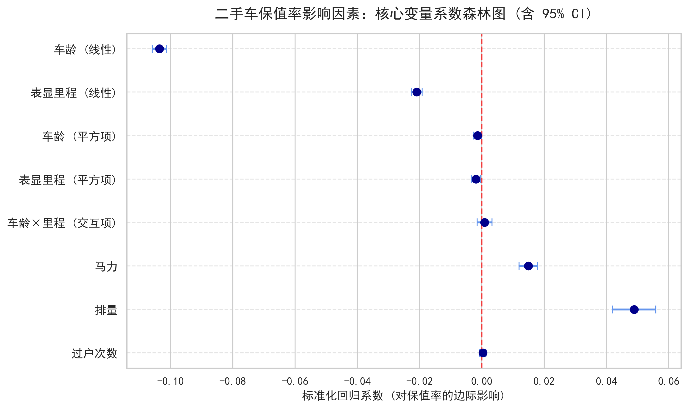

让模型在噪声中
看清细微差别。
AI 算法大赛 · 细粒度图像识别
围绕噪声标签下的图像分类，梳理 CLIP 微调方案、对比训练策略与评估结果，探索识别精度与鲁棒性的平衡。
MODEL / FIELD NOTES
图像输入↓CLIP ViT-B/32↓LoRA 微调 + 分类头↓评估与误差分析
省级三等奖AI 算法大赛
在数据、模型与真实场景之间探索。
这里记录我的三个项目，以及从问题走向结果的过程。
三个方向，同一种习惯：用证据说话，让结果可解释。
AI 算法大赛 · 细粒度图像识别
围绕噪声标签下的图像分类，梳理 CLIP 微调方案、对比训练策略与评估结果，探索识别精度与鲁棒性的平衡。
应用统计实践 · 数据分析
从交易价格分析到月均折损影响因素研究，整理数据、建立多元回归，并通过共线性检查与残差诊断解释模型。

旅游信息管理与分享 Web 应用
以目的地为核心，串联内容浏览、评论收藏、游记和行程规划；通过投稿审核与运营看板，补全后台管理流程。
从业务场景与数据出发，明确要回答的问题。
用代码、统计模型和对照分析检验想法。
保留证据与局限，让结论有依据、过程可回看。
这是一份持续更新的个人项目档案。
关注数据分析、AI 模型评估与 Web 应用开发，
也关注技术如何回答具体的问题。